Part 9: Resistance, Capacitance, Inductance
1. Resistance
① Resistivity and Temperature:
$$ R = \rho \frac{l}{S} $$ $$ \rho = \rho_0(1+\alpha t), \quad d\rho = \alpha \rho_0 dt \implies R = R_0(1+\alpha t) $$② Series and Parallel Circuits:
- Series: $R_{\text{total}} = \rho \frac{\sum l_i}{S} = \sum \rho \frac{l_i}{S} = \sum R_i \implies R_{\text{total}} = \frac{U_{\text{total}}}{I} = \sum \frac{U_i}{I} = \sum R_i$
- Parallel: $\frac{1}{R_{\text{total}}} = \frac{\sum S_i}{\rho l} = \sum \frac{S_i}{\rho l} = \sum \frac{1}{R_i} \implies \frac{1}{R_{\text{total}}} = \frac{I_{\text{total}}}{U} = \sum \frac{I_i}{U} = \sum \frac{1}{R_i}$
③ Equivalent Resistance:
1) Symmetry:
<1> Folding symmetry in grids:
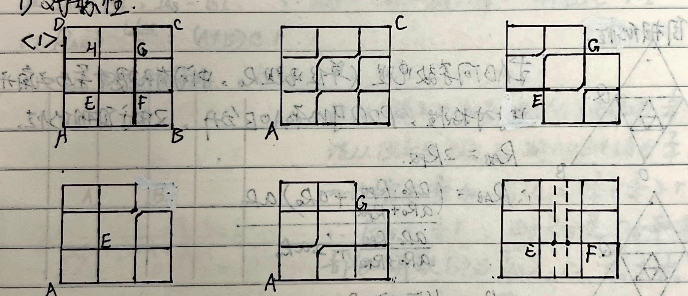
<2> Ladder network:
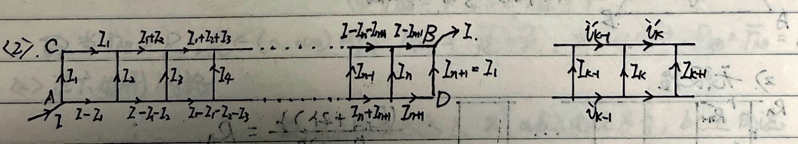
$$ U_{CB} = U_{AD} = [I_1 + (I_1+I_2) + (I_1+I_2+I_3) + \dots + (I-I_{n+1})] R $$ $$ = [(I-I_1) + (I-I_1-I_2) + \dots + I_{n+1}] R $$ $$ \therefore 2U_{CB} = n I R $$Also, from the loop equations:
$$ \begin{cases} I_k R + i_k' R = i_{k-1}' R + I_k R \\ I_k R + i_k'' R = i_k' R + I_{k+1} R \end{cases} \implies \begin{cases} i_{k-1}' + I_k = i_k'' \\ i_k' = I_k + i_k'' \end{cases} $$Solving this yields $4I_k = I_{k+1} + I_{k-1}$. Transforming this recurrence relation:
$$ I_{n+1} - (2-\sqrt{3})I_n = (2+\sqrt{3}) [I_n - (2-\sqrt{3})I_{n-1}] $$Because of conjugate symmetry, $I_{n+1} = I_1$, $I_n = I_2$. Solving gives:
$$ I_2 = \frac{(2+\sqrt{3})^{n-2} - (2-\sqrt{3})^{n-2}}{(2+\sqrt{3})^{n-1} - (2-\sqrt{3})^{n-1} + (2-\sqrt{3}) - (2+\sqrt{3})} I_1 $$And from the first segment: $2I_1 R = (I - I_1)R \implies I_2 = 3I_1 - I$. Combining these yields $I_1$ in terms of $I$.
$$ \therefore U_{AB} = I_1 R + U_{BC} $$ $$ R_{AB} = \frac{U_{AB}}{I} = \left\{ \frac{n}{2} + \left[ 3 - \frac{(2+\sqrt{3})^{n-2} - (2-\sqrt{3})^{n-2}}{(2+\sqrt{3})^{n-1} - (2-\sqrt{3})^{n-1} - 2\sqrt{3}} \right]^{-1} \right\} R $$<3> Self-similarity:
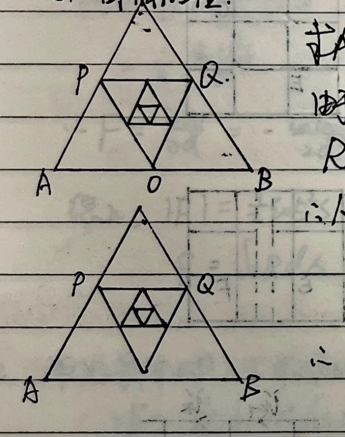
2) Infinity:
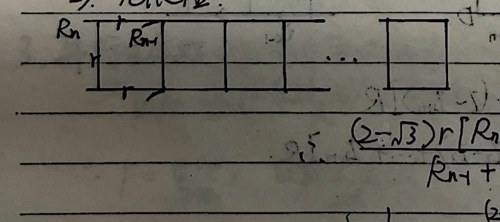
3) Current Superposition Method:
Assume a current $I$ flows into one node, calculate the current $I_{AB}$ flowing through the target branch AB. Assume a current $I$ flows out of the other node, calculate the current $I_{AB}'$ in AB. If $r_{AB}$ is the resistance of the wire connecting A and B ($r_{AB} = c \cdot r$), and $I_{AB} = A \cdot I$, $I_{AB}' = B \cdot I$:
$$ \therefore U_{AB} = (I_{AB} + I_{AB}') r_{AB} = (A+B) c \cdot r \cdot I \implies R_{AB} = \frac{U_{AB}}{I} = (A+B) c \cdot r $$<1> Square Grid:
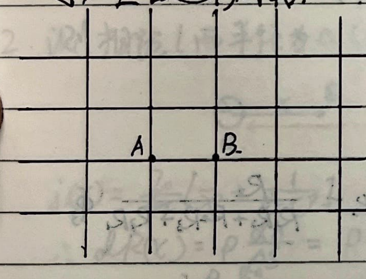
<2> Hexagonal Grid:
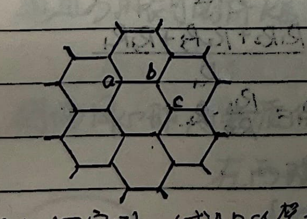
<3> Cross Grid / "" Shape:
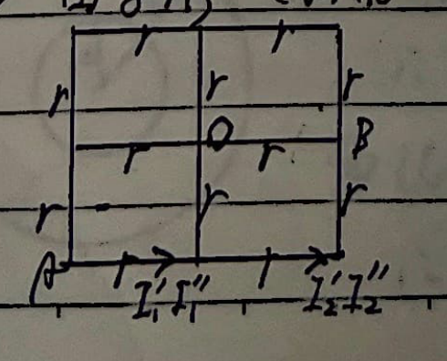
4) Y-$\Delta$ Transform (Y-$\Delta$ ):
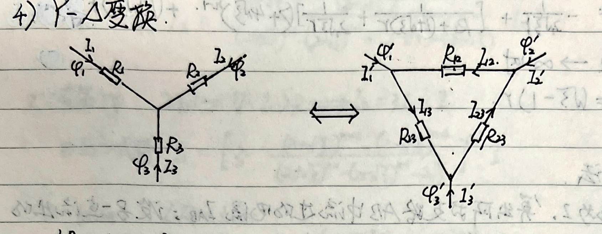
Equivalence implies: $I_1 = I_1', I_2 = I_2', I_3 = I_3'$ and $\varphi_1 = \varphi_1', \varphi_2 = \varphi_2', \varphi_3 = \varphi_3'$.
In the Y-shape (using node voltage method and Kirchhoff's current law):
$$ \begin{cases} \varphi_1 - I_1 R_1 + I_3 R_3 = \varphi_3 \\ \varphi_1 - I_1 R_1 + I_2 R_2 = \varphi_2 \\ I_1 + I_2 + I_3 = 0 \end{cases} $$In the $\Delta$-shape:
$$ \begin{cases} \varphi_1' - I_{13} R_{13} = \varphi_3' \\ \varphi_1' + I_{12} R_{12} = \varphi_2' \\ I_1' = I_{13} - I_{12} \end{cases} $$From the Y-shape, we can express $I_1$ in terms of the potentials:
$$ I_1 = \frac{R_2+R_3}{R_1 R_2 + R_2 R_3 + R_3 R_1} \varphi_1 - \frac{R_3}{R_1 R_2 + R_2 R_3 + R_3 R_1} \varphi_2 - \frac{R_2}{R_1 R_2 + R_2 R_3 + R_3 R_1} \varphi_3 $$From the $\Delta$-shape:
$$ I_1' = \left(\frac{1}{R_{31}} + \frac{1}{R_{12}}\right) \varphi_1' - \frac{1}{R_{12}} \varphi_2' - \frac{1}{R_{31}} \varphi_3' $$Comparing the coefficients of the potentials, we get:
$$ R_{12} = \frac{R_1 R_2 + R_2 R_3 + R_3 R_1}{R_3}, \quad R_{31} = \frac{R_1 R_2 + R_2 R_3 + R_3 R_1}{R_2}, \quad R_{23} = \frac{R_1 R_2 + R_2 R_3 + R_3 R_1}{R_1} $$By solving the reverse transformation from $\Delta$ to Y:
$$ R_1 = \frac{R_{12} R_{31}}{R_{12} + R_{23} + R_{31}}, \quad R_2 = \frac{R_{23} R_{12}}{R_{12} + R_{23} + R_{31}}, \quad R_3 = \frac{R_{23} R_{31}}{R_{12} + R_{23} + R_{31}} $$Special Topic: Measuring Resistivity
1. Measuring the resistivity of an infinite medium:
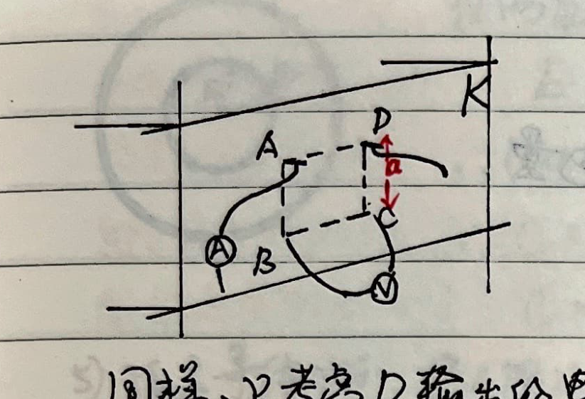
2. Measuring the resistivity of space where two metal spheres of radius $a$ are separated by distance $l \gg a$ (Multimeter reading is R):
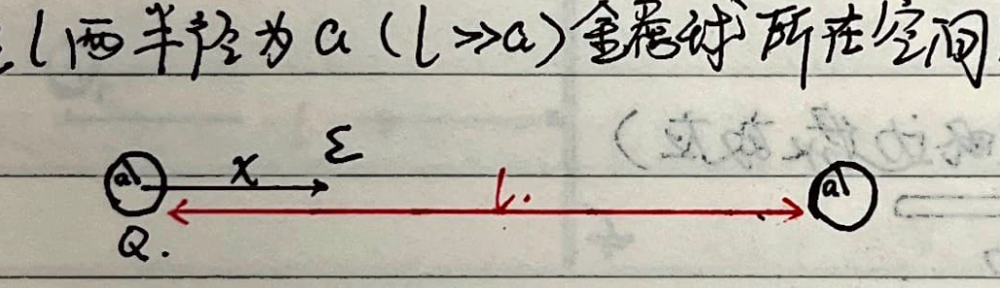
The current density at a point $x$ between the spheres is:
$$ j(x) = \frac{I_0}{4\pi} \left[ \frac{1}{x^2} + \frac{1}{(l-x)^2} \right] \quad (a < x < l-a) $$ $$ \therefore dR(x) = \rho \frac{dx}{S} = \frac{\rho dx}{I_0} j(x) = \frac{\rho dx}{I_0} \frac{I_0}{4\pi} \left[ \frac{1}{x^2} + \frac{1}{(l-x)^2} \right] = \frac{\rho}{4\pi} \left[ \frac{1}{x^2} + \frac{1}{(l-x)^2} \right] dx $$ $$ \therefore R = \frac{\rho}{4\pi} \int_a^{l-a} \left[ \frac{1}{x^2} + \frac{1}{(l-x)^2} \right] dx = \frac{\rho}{4\pi} \cdot 2 \left( \frac{1}{a} - \frac{1}{l-a} \right) = \frac{\rho}{2\pi} \left( \frac{1}{a} - \frac{1}{l-a} \right) $$The multimeter measures this total resistance $R_{\text{total}}$.
$$ \therefore \rho = \frac{2\pi R_{\text{total}} a (l-a)}{l-2a} $$When $l \to \infty$, $\rho = 2\pi R_{\text{total}} a$.
3. Measuring the resistivity of the substance between two concentric spheres:
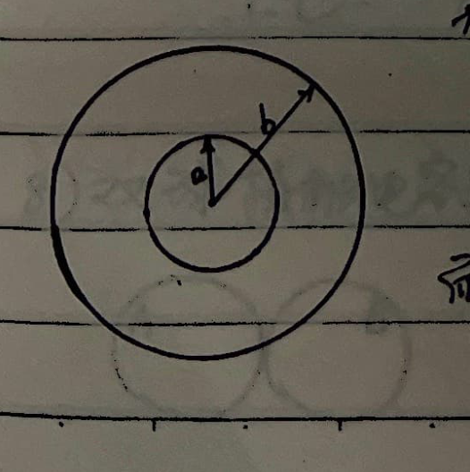
2. Capacitance
① Definition: $C = \frac{Q}{U}$
- $U$: potential difference between two plates.
- $Q$: charge passing through the wire after connecting the two plates.
② Series and Parallel Circuits:
- Series: $\frac{1}{C_{\text{total}}} = \frac{U_{\text{total}}}{Q} = \sum \frac{U_i}{Q} = \sum \frac{1}{C_i}$
- Parallel: $C_{\text{total}} = \frac{Q_{\text{total}}}{U} = \sum \frac{Q_i}{U} = \sum C_i$
③ Energy of a capacitor:
$$ W = \int q dU = \int_0^Q q \frac{dq}{C} = \frac{1}{2} \frac{Q^2}{C} = \frac{1}{2} \frac{Q^2}{\varepsilon S} d = \frac{1}{2} \left(\frac{Q}{\varepsilon S}\right)^2 \varepsilon S d = \frac{1}{2} E^2 \varepsilon S d = \frac{1}{2} \varepsilon E^2 \cdot V $$Energy density: $\omega = \frac{dW}{dV} = \frac{1}{2} \varepsilon E^2$
④ Typical capacitor capacitance:
1) Parallel plate capacitor (ignoring edge effects):
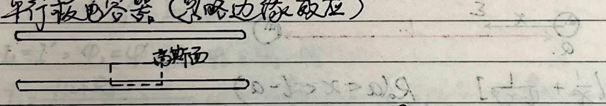
$$ E_{\Delta S} = \frac{\sigma \Delta S}{\varepsilon_0} \implies E = \frac{Q}{\varepsilon_0 S} \implies U = E d = \frac{Q d}{\varepsilon_0 S} $$ $$ \therefore C = \frac{Q}{U} = \frac{\varepsilon_0 S}{d} $$2) Tilted parallel plate capacitor ($h \ll d$):
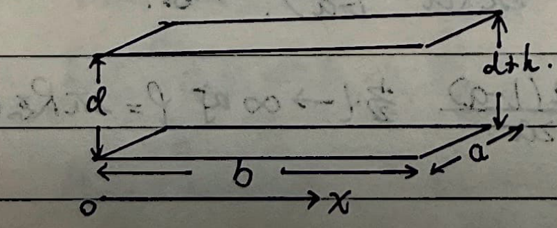
Treat the whole capacitor as an infinite number of $dC$ elements in parallel.
$$ dC = \frac{\varepsilon_0 a dx}{d + \frac{h}{b}x} $$ $$ \therefore C = \int_0^b \frac{\varepsilon_0 a dx}{d + \frac{h}{b}x} = \frac{\varepsilon_0 a b}{h} \ln\left(1 + \frac{h}{d}\right) $$3) Spherical capacitor:
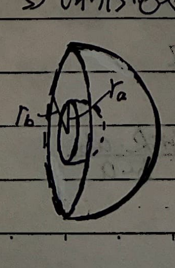
4) Cylindrical capacitor (length $L$):
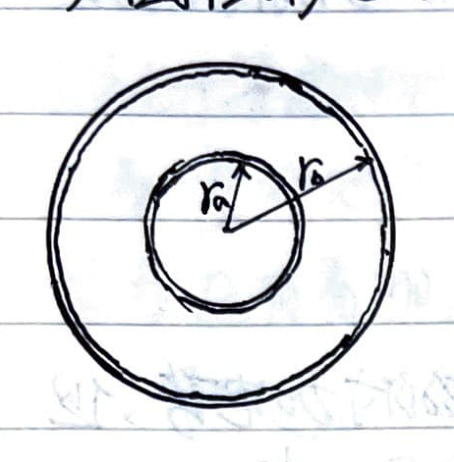
5) Isolated conducting sphere:
Treat infinity as the other plate.
$$ \because \varphi_\infty = 0, \quad \varphi_R = \frac{Q}{4\pi\varepsilon_0 R} $$ $$ \therefore U = \frac{Q}{4\pi\varepsilon_0 R} \implies C = \frac{Q}{U} = 4\pi\varepsilon_0 R $$6) Sphere-plate capacitor (radius $r$, distance $L$, $L \gg r$):
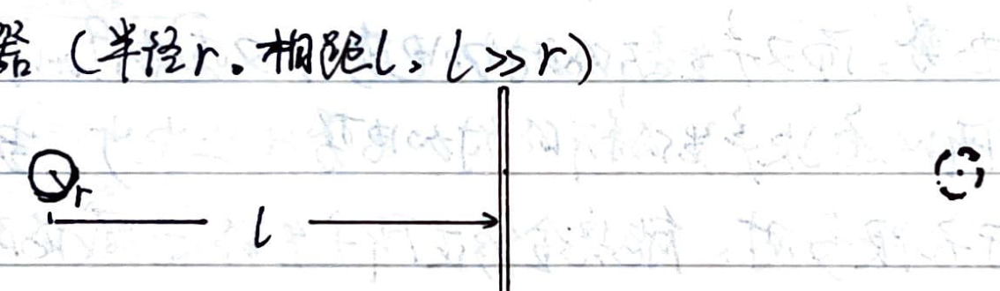
Make an image of the metal sphere on the right side of the metal plate, remove the plate, in this two-sphere system:
$$ U_{ab} = \frac{kq}{r} - \left(\frac{-kq}{r}\right) = \frac{2kq}{r} = \frac{q}{2\pi\varepsilon_0 r} $$ $$ \therefore C = \frac{q}{U_{ab}} = 2\pi\varepsilon_0 r $$This two-sphere system is exactly equivalent to two sphere-plate capacitors in series, so the sphere-plate capacitance is $C' = 4\pi\varepsilon_0 r$.
7) Two-sphere connected capacitor (radii $r_a, r_b$, distance $L$, $L \gg r_a, r_b$):
Because the two spheres are connected by a wire:
$$ \varphi_a = \varphi_b \implies \frac{q_1}{r_a} = \frac{q_2}{r_b} $$Taking infinity as the other plate, $\varphi_\infty = 0$:
$$ \therefore U = \varphi_a - \varphi_\infty = \frac{kq_1}{r_a} $$ $$ \therefore C = \frac{q_1+q_2}{U} = \frac{q_1 + \frac{r_b}{r_a}q_1}{\frac{kq_1}{r_a}} = 4\pi\varepsilon_0(r_a+r_b) $$8) Two-sphere contacting capacitor (radius $R$, distance $2R$):
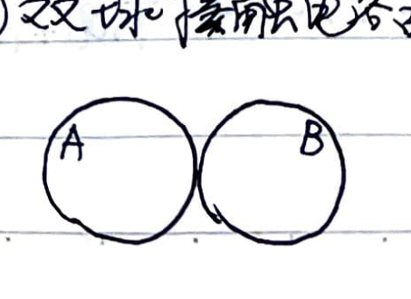
9) Leaky capacitor:
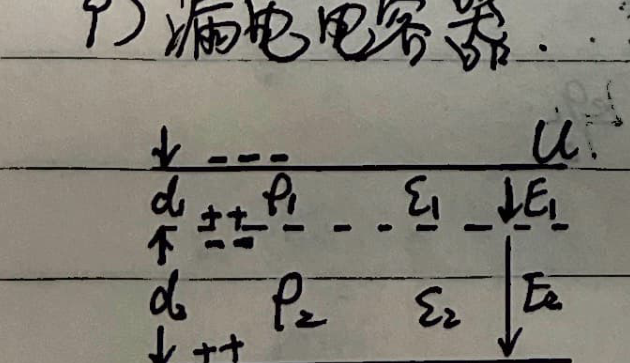
⑤ Equivalent Capacitance:
Similar to equivalent resistance, it has symmetry and infinite series solutions. Also, because in a two-terminal passive circuit, $R$ and $\frac{1}{C}$ have the same mathematical status:
- Series: $R = \sum R_i, C = (\sum \frac{1}{C_i})^{-1}$
- Parallel: $R = (\sum \frac{1}{R_i})^{-1}, C = \sum C_i$
Therefore, it has the opposite Y-$\Delta$ transform to $R$.
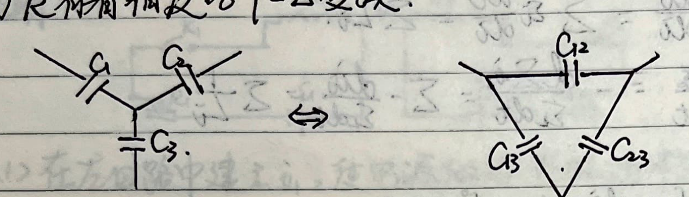
$$ \begin{cases} C_{12} = \frac{C_1 C_2}{C_1 + C_2 + C_3} \\ C_{23} = \frac{C_2 C_3}{C_1 + C_2 + C_3} \\ C_{31} = \frac{C_3 C_1}{C_1 + C_2 + C_3} \end{cases} \iff \begin{cases} C_3 = \frac{C_{12} C_{23} + C_{12} C_{31} + C_{23} C_{31}}{C_{12}} \\ C_1 = \frac{C_{12} C_{23} + C_{12} C_{31} + C_{23} C_{31}}{C_{23}} \\ C_2 = \frac{C_{12} C_{23} + C_{12} C_{31} + C_{23} C_{31}}{C_{31}} \end{cases} $$⑥ RC Circuits:
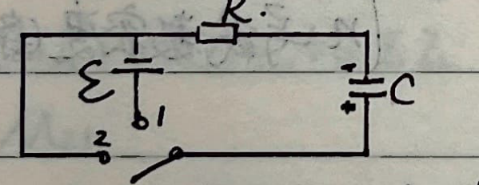
3. Inductance
① Definition:
$$ \mathcal{E}_L = -\frac{d\Psi}{dt} = -N \frac{d\Phi}{dt} = -\frac{d(LI)}{dt} = -L \frac{dI}{dt} $$ $$ \therefore L = -\mathcal{E}_L / \frac{dI}{dt} $$② Series and Parallel:
- Series: $L_{\text{total}} \frac{di}{dt} = \sum \mathcal{E}_{Li} = \sum L_i \frac{di}{dt} \implies L_{\text{total}} = \sum L_i$
- Parallel: $\frac{1}{L_{\text{total}}} = -\frac{di_{\text{total}} / dt}{\mathcal{E}_L} = -\frac{d\sum i_i / dt}{\mathcal{E}_L} = \sum -\frac{di_i / dt}{\mathcal{E}_L} = \sum \frac{1}{L_i}$
③ Energy of inductance:
$$ W = \int \mathcal{E} i dt = \int -L \frac{di}{dt} i dt = \int -L i di = \frac{1}{2} L I^2 = \frac{1}{2} \mu_0 n^2 V I^2 $$Also, from $B = \mu_0 n I$, eliminating $n I$ yields:
$$ W = \frac{B^2}{2\mu_0} V $$Energy density: $\omega = \frac{dW}{dV} = \frac{B^2}{2\mu_0}$
④ Self-inductance:
1) Solenoid:
$$ \Psi = N \Phi = (l \cdot n) \cdot B S = l n \cdot \mu_0 n I S = L \cdot I $$ $$ \therefore L = \frac{\Psi}{I} = \mu_0 n^2 S \cdot l = \mu_0 n^2 V $$Where $n$ is the turn density (turns/m).
2) Toroidal solenoid:
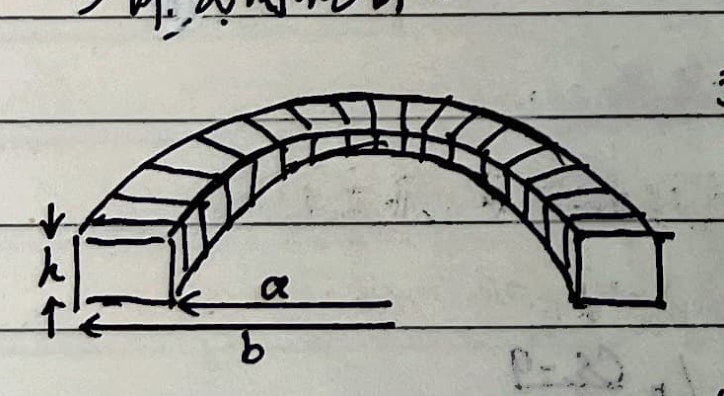
3) Coaxial cable:
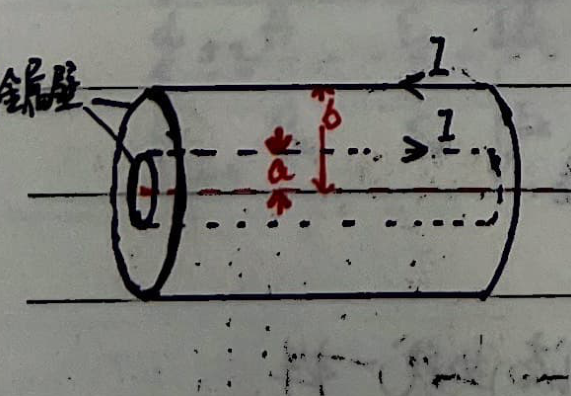
⑤ Mutual Inductance:
$$ \mathcal{E}_{21} = -M_{21} \frac{di_1}{dt}, \quad \mathcal{E}_{12} = -M_{12} \frac{di_2}{dt} $$And $M_{12} = M_{21} = M$
Proof:
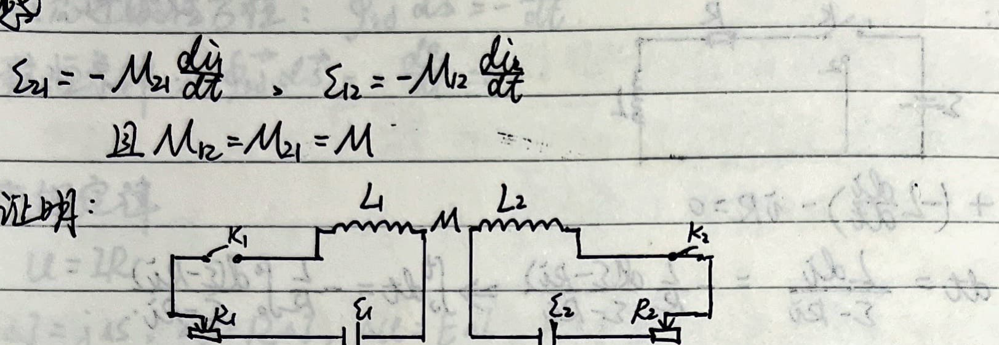
<1> Establish $i_1$ in the left circuit, the power source does work, and the energy stored in the magnetic field is $W_1 = \frac{1}{2} L_1 i_1^2$.
<2> Establish $i_2$ in the right circuit, the power source does work, storing energy $W_2 = \frac{1}{2} L_2 i_2^2$. But in this process, $L_1$ produces a back electromotive force. To keep $i_1$ constant, $\mathcal{E}_1$ must do additional work $W_{12} = -\int \mathcal{E}_{12} i_1 dt$:
$$ W_{12} = \int M_{12} i_1 \frac{di_2}{dt} dt = M_{12} i_1 \int_0^{I_2} di_2 = M_{12} I_1 I_2 $$<3> After the above two processes, the system reaches the state where the currents are $I_1$ and $I_2$,
$$ W_{\text{total}} = W_1 + W_2 + W_{12} = \frac{1}{2} L_1 I_1^2 + \frac{1}{2} L_2 I_2^2 + M_{12} I_1 I_2 $$<4> Starting by establishing $i_2$ in the right circuit first, reaching the same final state, the work done is similarly:
$$ W_{\text{total}} = \frac{1}{2} L_1 I_1^2 + \frac{1}{2} L_2 I_2^2 + M_{21} I_1 I_2 $$ $$ \therefore M_{12} = M_{21} $$Mutual inductance between a long solenoid and a ring: (length $\gg$ radius, ring on the axis, axis perpendicular to the ring plane)
Assume the current in the solenoid is $i_1$, then the magnetic flux through the ring is $\Phi = B_1 \pi r^2 = \pi r^2 \mu_0 n i_1$
$$ \therefore M_{21} = \pi r^2 \mu_0 n $$ $$ \therefore M_{12} = M_{21} = \pi r^2 \mu_0 n $$⑥ Equivalent Inductance:
When they are far apart, the calculation method is similar to equivalent resistance. Special case when they influence each other:
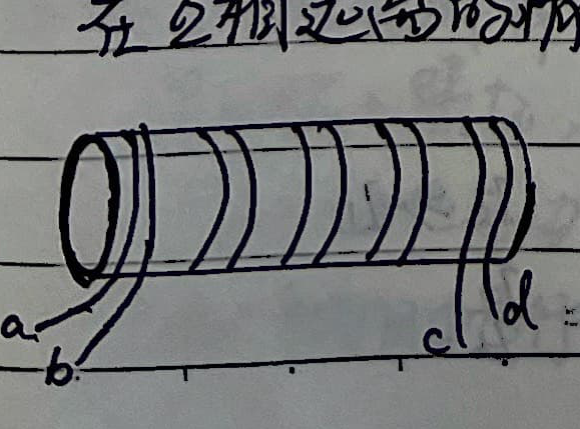
⑦ RL Circuit:
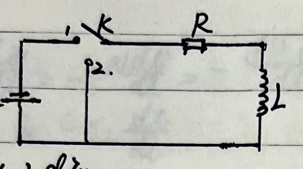
4. Semiconductors
① Diode:
- Ideal diode: Forward conducting $R=0$, reverse $R = \infty$.
- Real diode: $i = I_s(e^{\frac{qU}{kT}} - 1)$.
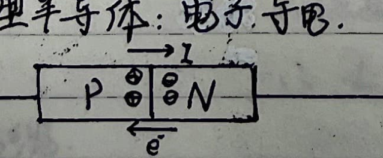
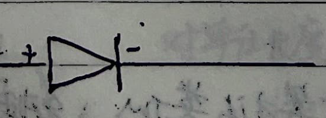
② Transistor:
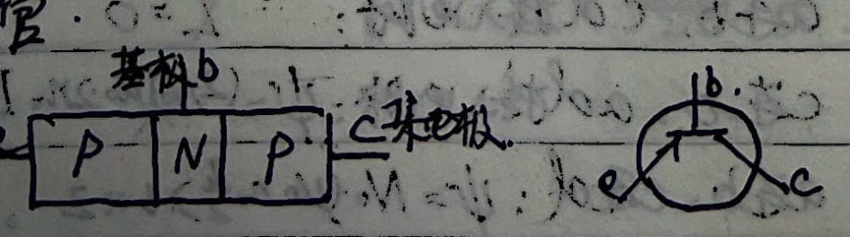
Emitter, Base, Collector.
$$ \begin{cases} I_e = I_b + I_c, \quad I_c \gg I_b \\ \beta = \frac{dI_c}{dI_b} \approx \frac{I_c}{I_b} \end{cases} $$